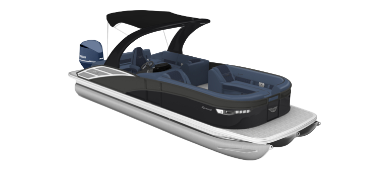

INFO
Boat Specefications
- MSRP: $266,802
- LOA: 28'-3"
- Beam: 8'6"
- Engine: Yamaha XF450NSA2
- Performance Package: ESP
- Floorplan: Fastback
- Exterior Main Color: Bayside Blue
- Exterior Accent Color: Metallic White
- Interior Main Color: White Veneto
- Interior Accent Color: Perforated Silver
- Interior Furniture Style/Trim: Sport
What's New for 2027
2027 updates
- Bayside Blue Main Exterior Color: A refined modern color palette to stand out in the showroom and on the water. The result of Bennington's thoughtful approach to custom color curation, these hues deliver meaningful personalization while maintaining a cohesive, premium look. Ensuring every color and graphic elevates the overall experience of a Bennington.
- Arch Mounting Cassette: A stronger, sleeker evolution of traditional arch foundations, the Cladded Arch Base replaces bulky tubular structures with an innovative cassette-style design that maximizes interior space and simplifies arch replacment or upgrades. The benefit is greater floorplan flexibility, improved long-term duraility, elevated fit-and-finish, and confidence backed by a design engineered to minimize wear and reduce warranty concerns..
- Stage 6 Audio Package: Stage 6 Audio Package transforms every outing into a premium entertainment experience with a high-performance Rockford Fosgate audio system. Featuring a PMX-6BB source unit, six RGB-capable M2 6.5" speakers, two RGB-capable M2 8" speakers, two RGB-capable M2 arch speakers, and a 10" PMPS-10 powered subwoofer/amplifier combo, this package delivers rich, dynamic sound from bow to stern. Powered by dual PM-600X4 amplifiers and equipped with a PMX-R20B aft remote, Stage 6 combines exceptional audio clarity, deep bass response, customizable lighting, and convenient onboard control for an elevated on-water experience.
- Comfort Step Ladder: Features wide, stair-style steps that provide easier, more comfortable boarding from the water. The ergonomic design improves stability and confidence for swimmers of all ages, creating a safer and more enjoyable on-water experience.
- Dockease Camera: Provides a dedicated view of the port-bow blind spot to improve visibility during docking and low-speed maneuvering. Mounted beneath the deck on the port nose cone and displayed on the available 12" Vivid UX Main Display, it helps captais dock with greater confidence, percision, and control.